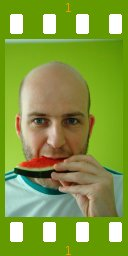

People of openSUSE: Stephan Kulow

Today you can also read the ‘People of openSUSE’ interview with Stephan Kulow, the release manager of the openSUSE distribution.
Read on to see which answers he provides.
- Nickname: Coolo
- Blog: http://www.kdedevelopers.org/blog/124
- Favorite season: Definitely spring. Sunny, but not too warm.
- Motto: Keep cool.
Please introduce yourself!
I was born 1976 in Wismar, a very nice city at the baltic sea – roughly in the middle between Rostock and Lübeck. I went to a boarding school in Rostock for 4 years and after my military service at the beach of the baltic sea I went to study Medical Computer Science in Lübeck. There I met the cutest girl of the world, adopted two parrots, moved with her to Erlangen, then later to Fürth and she agreed to marry me in 2005. Right now we’re waiting for our boy to arrive – which is planned to arrive at the same day 10.3 Beta1 is (not my plan).
Tell us about the background to your computer use.
I started using computers only when linux was available. It wasn’t exactly my choice, but when I grew up having a computer in the house wasn’t part of the culture. Today I have two computers in my living room alone. Ok, one is named game console and one is named sat receiver – they are both computes though and one of them runs linux.
When and why did you start using openSUSE/SUSE Linux?
I used the very first SUSE Linux versions < 5. Then I used Debian and later Caldera OpenLinux. When I started to work for SUSE, it didn’t take long before I switched. So it must have been around 2003. I think that was SL 8.1.
When did you join the openSUSE community and what made you do that?
I don’t think I have a good answer to that question. I joined the openSUSE community the moment we opened the development because I thought it’s important.
In what way do you participate in the openSUSE project?
I’m the release manager of the distribution.
What especially motivates you to participate in the openSUSE project?
My salary I guess. While it’s surely a nice project to participate in, having a job that asks me to participate is surely helping.
What do you think was your most important contribution to the openSUSE project/community or what is the contribution that you’re most proud of?
During the hack week I won an award for autoconverting debian sources to RPMs in the build service. And I was very proud of the hack, even though I still don’t know of any user of it. For the distribution there were several things I did, including major improvement of the boot time.
When do you usually spend time on the openSUSE project?
During my working hours? But I also like to hang out in IRC at night and discuss with others what’s the weather in England.
Three words to describe openSUSE? Or make up a proper slogan!
I leave creating slogans to other people.
What do you think is missing or underrated in the distribution or the project?
I wish we could offer the support for e.g. video editing needed to send my mother a DVD of my new born.
What do you think the future holds for the openSUSE project?
I hope we can grow our community as we did in the past years. I envision an even stronger integration between community, distribution and users through the use of build service. This is a very strong tool. And who wouldn’t want to have it’s own kernel patch maintained by an automatic build service, so that if you update your distribution to the latest factory, you get a new kernel and your patch is still in there.
A person ask you why he/she should choose openSUSE instead of other distribution/OS. What would be your arguments to convince him/her to pick up openSUSE?
That very much depends on the person asking. For most people I know it’s enough if I explain I’m responsible for parts of it is good enough as a reason. Still I avoid convincing people too hard about their own choices.
Which members of the openSUSE community have you met in person?
Beside Benjamin and Francis being in Nürnberg I don’t think I have met community members not working at Novell.
How many icons are currently on your desktop?
One and that is a left over from debugging something around drag & drop. I use full screen applications, so I have little use for desktop icons.
What is the application you can’t live without? And why?
kmail. And the reason is simple: I’m a mail junkie
Which application or feature should be invented as soon as possible?
I want a mail thread summarizer. A button I press that would output “ok, in that thread there is nothing to be missed. Someone had a problem, someone else had it too, they got help and now everyone is happy”. Of course with an option to remove all such threads.
Which is your preferred text editor? And why?
I use xemacs for everything related to programming and vi for everything else.
Which famous person would you want to join the openSUSE community?
I have no good candidate. I rather have another million of normal persons than having one famous.
Which computer related skills would you like to have?
The ability to beat my wife in klines scores? Is that computer related? I don’t know.
The Internet crashes for a whole week. How would you feel, what would you do?
The week before release? I would feel horrible – about every other week: I would follow the TV news more closely.
Which is your favorite movie scene?
I think my preference is a classic. When Jerry Maguire’s monologue is interrupted with “You had me at hello”. I won’t say if I cried though.
Star Trek or Star Wars?
What’s Star Wars? Ah, that show they cancelled after 6 episodes? Nah!
What is your favorite food and drink?
May sound spartan, but a good bread a fresh water.
Favorite game or console (in your childhood and nowadays)?
In my childhood it was checkers, today it’s project manager games – e.g. age of empires.
Which city would you like to visit?
There are still various unvisited. I think the top one is Saint Petersburg.
What is your preferred way to spend your vacation?
My preferred way is 100% family. One week with my niece refresh me better than 2 weeks of hiking or sun bathing. I need to keep my mind busy.
Someone gives you $1.000.000. What would you do with the money?
You don’t want my investment ideas. But a nice house for me and my family would be the first on my list with free monday.
If traveling through time was possible, when would we be most likely to meet you?
Not too far away. I want to see the Zwinger of Dresden in its full beauty before the industry fog made it all black. If you’ve seen the Dresden Frauenkirche you know what beauty I’m talking about. I would target a nice september night in 1900.
There’s a thunderstorm outside. Do you turn off your computer?
So it isn’t afraid? My computer isn’t easy to scare, so no.
Have your ever missed an appointment because you forgot about it while sitting at your computer?
Sure. Not just one – but I sit several hours a day at my computer and missing appointments is a regular part of my job.
Show us a picture of something, you have always wanted to share!
I have nothing to share.
You couldn’t live without…
Life.
Which question was the hardest to answer?
This one. I had to read all other questions again.
What other question would you like to answer? And what would you answer?
I had enough. Thank you :)